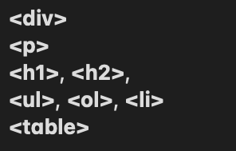

Ett HTML-element är den grundläggande byggstenen i en webbsida. Den består av en öppnings-tag, innehållet och en stängnings-tag. En HTML-tagg är ett märke eller en etikett som används för att markera början och slutet av ett HTML-element. Tags inleds med < och avslutas med >. De har också en snedstreck . Attribut är information som läggs till i en öppnings-tag för att ge ytterligare egenskaper eller instruktioner till ett HTML-element. Attributen används för att anpassa eller konfigurera hur ett element ska visas eller fungera ex.
entitet är en teckenkodning för att representera särskilda tecken eller symboler som annars skulle kunna används i HTML-kod eller inte kan visas korrekt på webbsidor. De börjar med "&" och slutar med ";". Till exempel --->
I HTML och CSS finns det två kategorier av element: block-element och inline-element.
Block-element: den tar upp hela horisontella utrymmet och börjar på en ny rad, så om du lägger till flera block-element kommer de vanligtvis att placeras ovanför varandra som skapar en "block". Den kan ändras i bredd och höjd. Man kan ange deras bredd och höjd och använda egenskaper som width och height i CSS för att styra deras storlek. Ex: ->
Inline-element:den tar upp så mycket utrymme som deras innehåll behöver och fortsätter på samma rad som tidigare innehåll. De "flödar" inom texten och påverkar inte sidans på samma sätt som block-element, samt den anpassar sig till storleken på sitt innehåll. De har oftast ingen egen bredd och höjd, och deras storlek beror på innehållet inuti dem. Ex